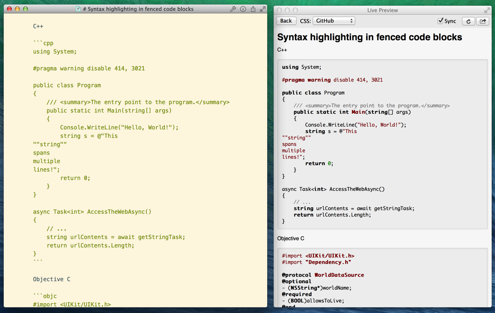

MWeb 1.1 版更新说明
新增
- 增加导入.txt或Markdown文档到文档库功能：File --> Import Files To Library...
- 增加TOC（Table of Content）支持，和是否 Render TOC 选项
- 增加免费版
- 增加sitemap功能
- 站点文件夹增加右键菜单
- 增加代码高亮功能，支持超多编程语言，1.0版本的朋友请去https://github.com/oulvhai/MWeb-Themes/下载最新的主题即可。支持语言及缩写详细请参考：http://highlightjs.readthedocs.org/en/latest/css-classes-reference.html
修正
- 即时预览功能大改进，现在是真正即时了，然后滚动时，同步的位置也比较准确了。
- Outline跳到所在位置时高亮选中文字
- 区分大小写系统在初次打开时无法看到自带的文档问题
- 初次使用直接点Preview Site无效果问题
代码高亮功能截图
 

